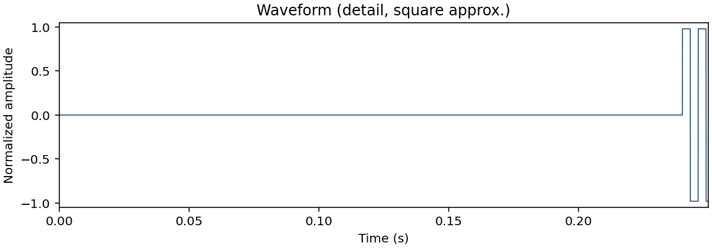
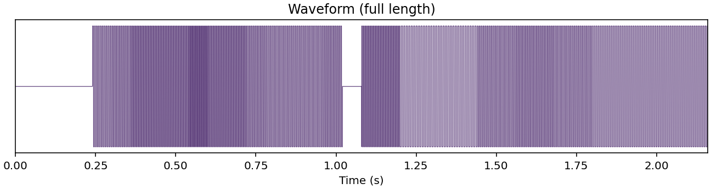
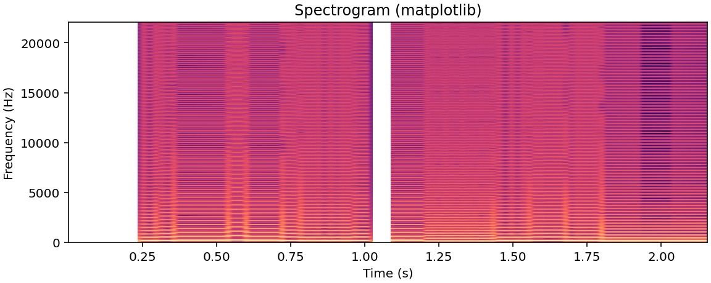

本节配合《实验与网页衔接》方案：同源音频 (assets/gamesong.wav)
+ 幻灯片可用的静态图谱 +（可选）浏览器内频谱条。请先通过按钮或控件触发播放，以满足移动端「用户手势后出声」的策略。
分析与 HTML5 <audio> 二选一出声：开始分析会自动暂停控件播放，避免双倍音量。

export_assets.py

assets/compression_note.txt 由导出脚本自动生成，用于与同段 PCM 尺寸的定性对比摘要。